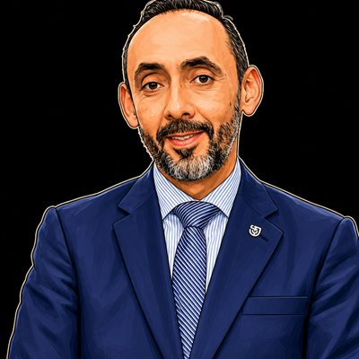
Mag. José Luis
Álvarez Pulido
Magistrado Presidente · Supremo Tribunal de Justicia del Estado de Jalisco
Presidente del Consejo de la Judicatura · Poder Judicial de Jalisco
Innovación Jurídica en la era digital. Cuatro años pensando, desde Iberoamérica, las preguntas que el derecho aún no sabe contestarle a la tecnología.
Desde 2023, el Foro ha reunido en la Universidad de Guadalajara a juristas, ingenieros, jueces, reguladores y académicos de tres continentes para discutir cómo el derecho debe responder a la inteligencia artificial, la criptoeconomía, la ciberseguridad y la propiedad intelectual digital. Cada edición culmina en un libro colectivo con arbitraje doble ciego.
Siete ejes consolidados desde la segunda edición, dos emergentes incorporados en la cuarta. Las contribuciones se recibieron en cualquiera de los nueve y fueron evaluadas en doble ciego por el Comité Científico.
Gobernanza algorítmica, responsabilidad civil y penal de sistemas autónomos, autoría de obras sintéticas, entrenamiento de modelos y AI Act en América Latina.
Computación cuántica, neurotecnologías, realidades extendidas, gemelos digitales y gobernanza anticipatoria.
Protección de datos personales, la nueva Ley Federal de Protección de Datos Personales en Posesión de los Particulares, infraestructura crítica y ciberdefensa.
Resolución de disputas en línea (ODR), inteligencia jurídica aumentada, tecnología legal, automatización judicial y acceso a la justicia.
Democracia algorítmica, desinformación, neuroderechos y economía de datos.
Criptoactivos, DeFi, tokenización, monedas digitales de banco central y regulación financiera.
Telemedicina, dispositivos conectados, datos biomédicos y edición genética.
Huella ambiental de la IA y data centers, sostenibilidad del cómputo intensivo, derecho a reparar, obsolescencia programada, dominio público digital y bioderecho computacional.
Resolución de disputas en línea (ODR), mediación asistida por IA, justicia predictiva, arbitraje digital, plataformas de resolución electrónica y acceso digital a la justicia.
Las ponencias aceptadas en la convocatoria se presentan al mundo en una jornada virtual internacional de acceso abierto, coorganizada entre México y España por el Cuerpo Académico, la Universidad de Guadalajara, el Observatorio Mundial de la Abogacía y la Universidad de las Hespérides.
Conoce la jornada virtualEl Comité Científico está cerrando la nómina de la cuarta edición. Las confirmaciones se anuncian en redes oficiales del Foro. La curaduría preserva el balance entre academia, sectores judicial y legislativo, sector privado y organismos nacionales e internacionales con función reguladora que ha distinguido al evento desde la I edición.

Magistrado Presidente · Supremo Tribunal de Justicia del Estado de Jalisco
Presidente del Consejo de la Judicatura · Poder Judicial de Jalisco
Asesora de Tecnologías de la Información · Despacho de Presidencia
Consejo Superior de la Judicatura · Rama Judicial de Colombia
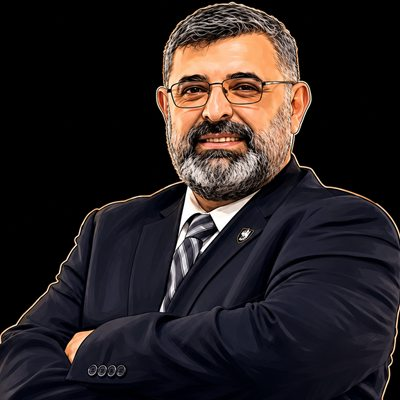
Socio Cofundador · ALGDETIC
Presidente · CiberPadres LATAM
Director · Paraguay Ciberseguro
Jefa de Estudios del Área de Derecho · Universidad Alfonso X el Sabio · España
Socia fundadora y Directora estratégica · IusConnect, S.L.
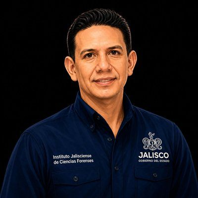
Director General · Instituto Jalisciense de Ciencias Forenses
Línea iv · Justicia Digital | Línea v · Derechos Humanos Digitales «Tecnología, ciencias forenses y derechos: identificación craneométrica con IA en el Instituto Jalisciense de Ciencias Forenses»Director General · Instituto de Justicia Alternativa (IJA) · Poder Judicial de Jalisco
Investigador · El Colegio de Jalisco
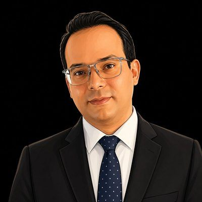
Magistrado Auxiliar · Consejo Superior de la Judicatura · Colombia
Presidente · Asociación Latinoamericana de Derecho, Gobierno y Nuevas Tecnologías (ALGDETIC)
Directora Seccional · Rama Judicial
Santa Marta · Colombia
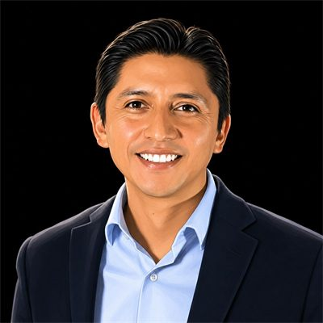
Fundador y Presidente · Academia Mexicana de Ciberseguridad y Derecho Digital (AMCID)
Vicepresidente · Federación Iberoamericana de Asociaciones de Derecho e Informática (FIADI)
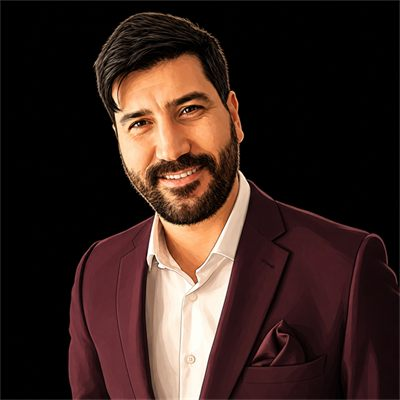
Capacitador en Derecho y Tecnología de Magistrados y Jueces · Corte Suprema de Justicia de la Nación Argentina
Profesor-Investigador · Universidad de Cuyo
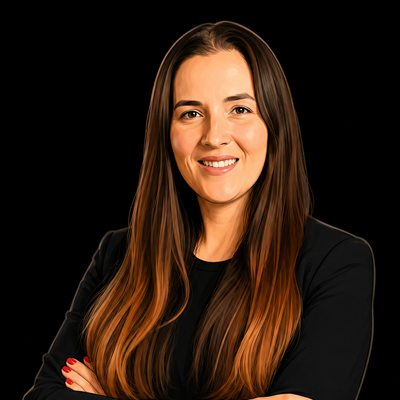
Directora de Admisión · Escuela de Ciencias Sociales y Gobierno · Tec de Monterrey
Profesora-Investigadora en Ciberseguridad y Derecho Digital
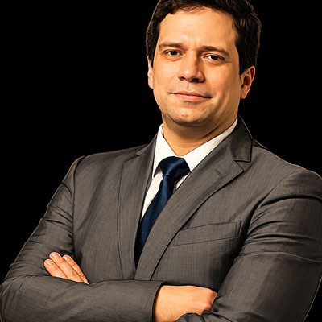
Presidente · Asociación Panameña de Peritos en Informática Forense (APPIF) · Panamá
Director de Informática Forense · Fintegrity Group
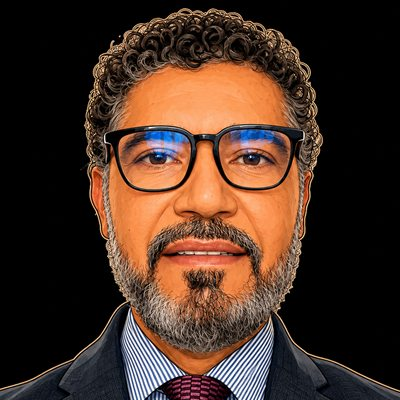
Magistrado Auxiliar · Consejo Superior de la Judicatura · Colombia
Doctor en Derecho Procesal Contemporáneo · Universidad de Medellín
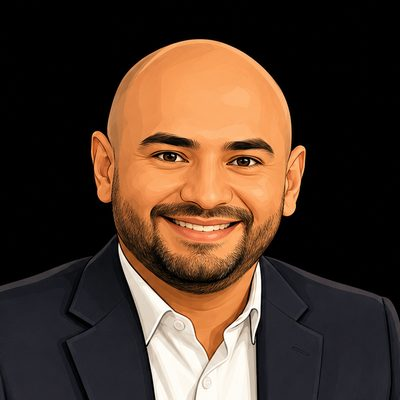
Decano · Facultad de Derecho · Universidad Libre, seccional Cartagena · Colombia
Doctor en Derecho Procesal Contemporáneo · Universidad de Medellín
Presidenta · Observatorio Mundial de la Abogacía (OMA)
Doctora en Derecho · Consultora internacional en IA y gobernanza algorítmica
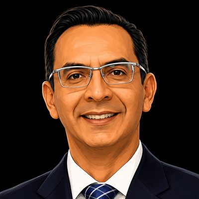
Secretario Técnico · Secretaría Ejecutiva
Sistema Estatal Anticorrupción de Jalisco (SEAJAL)
Juez de Control · Sistema Penal Acusatorio
Poder Judicial del Estado de Jalisco
Docente · Universidad Tecnológica de Bolívar · Cartagena de Indias, Colombia
Conjuez · Sala Laboral · Tribunal Superior del Distrito Judicial de Cartagena
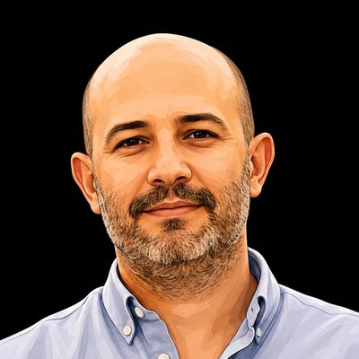
Investigador por México (SECIHTI) · El Colegio de Jalisco
Coordinador · Seminario Permanente del Grupo de Trabajo Interinstitucional de Seguridad Metropolitana (GTISM)
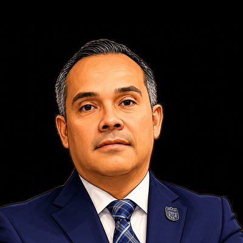
Director General · Escudo Urbano C5
Gobierno del Estado de Jalisco
Directora General · Centro de Comando, Control, Comunicación, Cómputo y Coordinación e Inteligencia (C5i)
Secretaría de Seguridad Pública del Estado de Aguascalientes
Director General · Sistema Estatal de Coordinación, Comando, Control, Comunicaciones, Cómputo e Inteligencia (C5i)
Secretaría de Seguridad y Paz del Estado de Guanajuato
Director of Product and Software Development · KMS Technology
Línea ii · Tecnologías Emergentes | Línea iii · Ciberseguridad y Soberanía Digital Ponencia por confirmarCentro Universitario de Tlajomulco
Universidad de Guadalajara
Coordinador de Transferencia Tecnológica y del Conocimiento
Universidad de Guadalajara
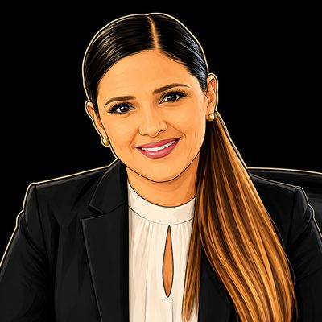
Poder Judicial de la Federación
Línea vii · Salud Digital y Biotecnologías «Marco jurídico de la telemedicina»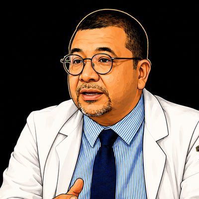
Hospital Civil de Guadalajara «Fray Antonio Alcalde»
Línea vii · Salud Digital y Biotecnologías «El expediente clínico electrónico y el derecho sanitario en México»Centro Universitario de Ciencias Sociales y Humanidades
Universidad de Guadalajara
Jefa del Departamento de Innovación
Hospital Civil de Guadalajara
Universidad Nacional Autónoma de México
Línea v · Derechos Humanos Digitales «Los derechos epistémicos como cuarta generación de derechos humanos»Lista en construcción · Las confirmaciones se publican en nuestras redes sociales
Recibir actualizacionesEl Comité Científico convocó a investigadoras, investigadores y profesionales del derecho y la tecnología a presentar contribuciones originales para la cuarta edición del Foro Internacional de Derecho y Tecnología.
Las contribuciones aceptadas se publicarán en el libro colectivo de la serie Innovación Jurídica en la era digital, tras doble revisión ciega por dos miembros del Comité Científico.
La convocatoria recibió contribuciones en español, inglés y francés sobre los nueve ejes temáticos. La recepción cerró el 15 de agosto de 2026 y el proceso de dictaminación concluyó.
El Foro es una iniciativa académica del Cuerpo Académico UDG-CA-1236 «Derecho y Tecnología», coordinada con el Departamento de Ciencias Sociales y Jurídicas y la Academia de Derecho Económico Empresarial e Internacional, ambos del CUCEA. La cuarta edición se desarrolla en alianza con los Centros Universitarios CUGDL y CUTlajomulco y la Ciudad Judicial del Estado de Jalisco.
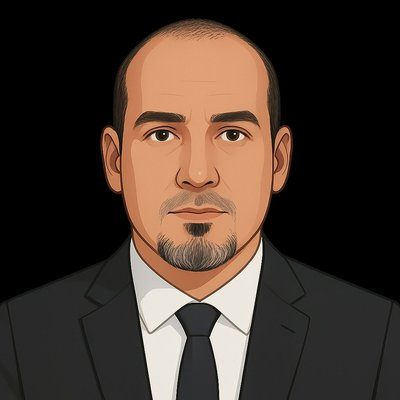

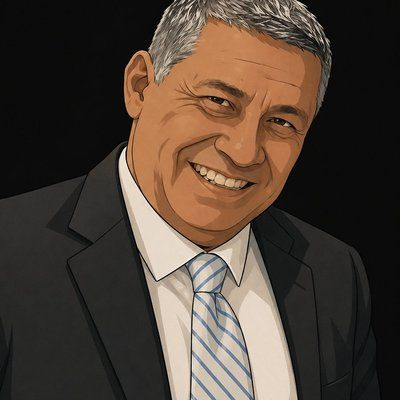